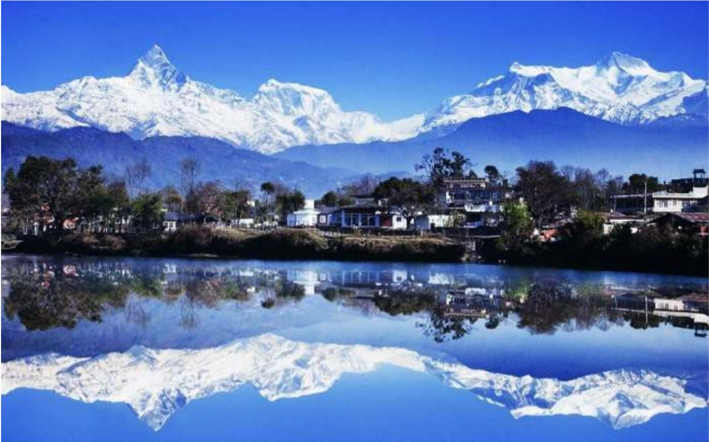

Despite the relentless heat prevailing in most parts of the country, India still has a lot of places that are perfect for a summer vacation. Be it a weekend getaway with friends and family or a week-long solo trip, you will find the best spots to visit in summer. But it may be a difficult job to select the most suitable destination for your trip. And that is why we have come up with some good places you can visit in India during the summers.
Kashmir: Best Place to Visit In Summer
“If there is a heaven on earth,
It is here…it is here….”
· SPECIAL ABOUT KASHMIR:
i. Kashmir has a variety of terrains ranging from lakes, snow-capped mountains, coniferous kissed hills to glacier fed rivers.
ii. On one hand, Kashmir is covered with wild untouched terrain and on the other, there are fields of saffron and orchards of apples awaiting their full bloom.
· HOW TO REACH:
i. Nearest Airport is in Srinagar
ii. Nearest railhead is Jammu, 290 km away from Kashmir
· PLACES TO VISIT:
i. Kashmir has everything you can think about- lakes, houseboats, hills and gardens
ii. Cruise in the azure waters of Dal Lake
iii. Take a gondola ride in Gulmarg and visit the many bollywood destinations in Pahalgam
iv. Sonmarg is known for its enthralling land of flamboyant blooming flower filled pastures, plush greenery, snow-capped mountains, still valleys and pine flocked slopes
· Places To Stay:
The Vintage Gulmarg, The Chinar Resort & Spa, The Orchard Retreat & Spa
· Average Budget:
₹8,000-13,000 per person.
· Places to eat:
Alchi Kitchen, Dana Pani, and Stream Restaurant
Manali

“The mountains are calling and I must go.”
· What so special about Manali:
i. Manali is mainly more for adventure seekers and best visited during the month of march-June.
ii. It is a rustic enclave known for its cool climate and snow-capped mountains, offering respite to tourists escaping scorching heat of the plains.
· How to Reach:
i. Nearest Airport is Bhuntar, 50 km away from Manali
ii. Nearest rail head is in Chandigarh, 291 km away from Manali
iii. Road trip: Manali is 546 km away from Delhi
· Places To Stay:
The Himalayan, Snow Valley Resorts, Himalayan Heights, Honeymoon Inn
· Average Budget:
₹6,000-9,000 per person
· Places to eat:
Casa Bella Vista, Chopsticks Restaurant, and The Johnson’s Cafe & Hotel
Shimla: Rich History
“Shimla the queen of hills”
· WHAT SO SPECIAL ABOUT SHIMLA:
i. The town is famous for pleasant walking experiences on hillsides surrounded by pine and oak forests.
ii. This capital city of Himachal Pradesh is famous for The Mall, ridge, and toy train.
iii. With colonial style buildings, the town has relics of ancient past that lend it a distinct look.
· HOW TO REACH:
i. Nearest Airport is Chandigarh, 115 km away
ii. Nearest railhead is Kalka
iii. Road Trip: Shimla is 360 km away from Delhi
· PLACES TO VISIT:
i. Mall road which fascinates the tourist the most.
ii. Jakhu Hill is a short and a beautiful drive from Shimla. Visit Lord Hanuman’s Temple here.
iii. Another major landmark is the Viceregal Lodge which was built during the British reign.
iv. If you have a fetish for polo then stops over at Annandale which is 4km from the Ridge.
· SHIMLA IS FAMOUS FOR:
i. Popular handicrafts of Shimla include shawls, wooden items, metal items, decorative items, wooden carvings, and carpets.
ii. The Tibetan Market is a great place for shopping for such beautiful handicrafts.
· Places To Stay:
i. Snow Valley Resorts, The Oberoi Cecil, Woodville Palace Hotel Shimla, Radisson Jass Shimla and you can also camp on the hills.
· Average Budget:
₹6,000-10,000 per person.
· Places to eat:
Cafe Shimla Times, Himachali Rasoi, and Cecil Restaurant.
Jaipur: The Pink City

"Padharo Hamare Desh"
· WHAT SO SPECIAL ABOUT JAIPUR:
The Pink City, Jaipur is the capital of Rajasthan. In this otherwise hot city, winter is pleasurable. The city experiences lovely weather, which is great for sightseeing. Also, during this season Jaipur organizes many famous festive events like the Jaipur Literature Fest. The royal beauty of Jaipur makes it one of the best places to visit in winter in North India.
· HOW TO REACH:
· PLACES TO VISIT:
i. Admire the exotic architectural styles that combine both Mughal and Rajput characteristics at Jal Mahal or Water Palace in Jaipur.
ii. Staying at Lohagarh Fort Resort is one of the best things to do in Jaipur as you get to experience the royalty of the Pink City.
iii. If you are looking for an entire Rajasthani cultural experience, head on over to the Chokhi Dhani.
iv. Ranthambore National Park is an adventure lover’s delight where there is a myriad range of greenery and fauna.
· JAIPUR IS FAMOUS FOR:
Planned by Vidyadhar Bhattacharya, Jaipur holds the distinction of being the first planned city of India. Renowned globally for its coloured gems, the capital city of Rajasthan combines the allure of its ancient history with all the advantages of a metropolis.
· Places To Stay:
Regenta Central Jal Mahal, Park Prime, and Royal Orchid Central
· Average Budget:
₹8,000-11,000 per person.
· Places to eat:
Jaipur Adda,The Rajput Room,Samode Haveli,Dragon House and Degree East
Darjeeling: Tea Garden Paradise

“A great journey start with the great cup of tea”
· ABOUT DARJEELING:
Darjeeling is famous throughout the world for the tea it grows and the great view of the Kanchenjunga range of mountains that it offers. It is also known for its richness in cultural & natural heritage and the famous toy train that has been declared a UN heritage.
· HOW TO REACH:
i. Bagdogra is the nearest airport from Darjeeling, located at a distance of 65 km.
ii. Darjeeling has its own railway station, named Darjeeling Railway Station.
iii. Road trip: Nearest major city from Darjeeling is Kolkata, 165 km away.
· WHAT INTRESTING TO DO IN DARJEELING:
i. Visit the famous monasteries like Ghoom Monastery.
ii. Witness wildlife at the largest high altitude zoo in India, Padmaja Naidu Himalayan Zoological Park.
iii. Spend an evening in the bustling Batasia Loop, one of major tourist attractions of Darjeeling.
· Places To Stay:
MAYFAIR Darjeeling, Sterling Darjeeling, Summit Hermon Hotel & Spa
· Average Budget:
₹8,500-13,500 per person
· Places to eat:
Kunga Restaurant, Sunset Lounge, and Gatty’s Cafe